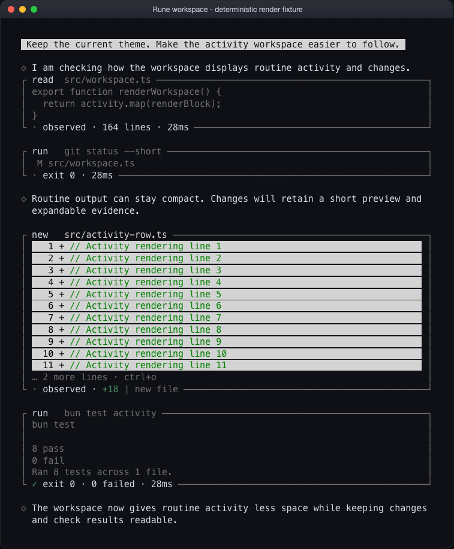
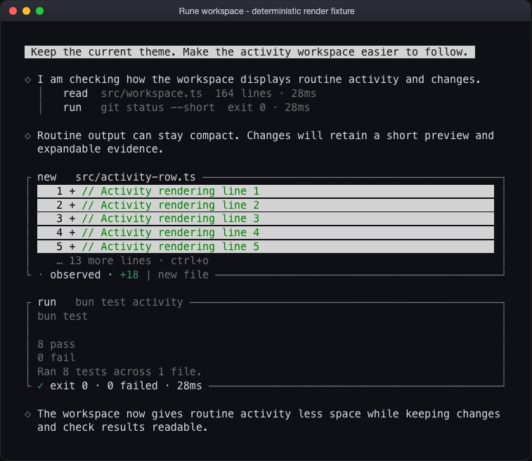
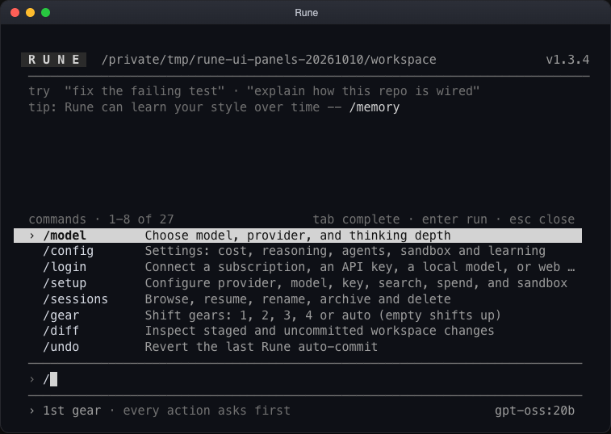
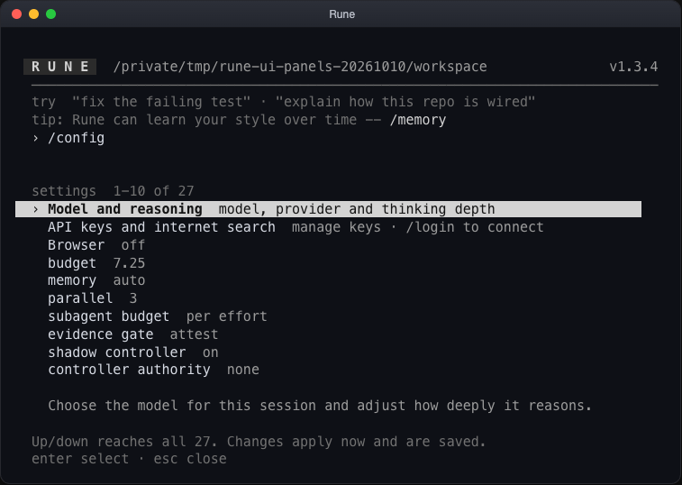
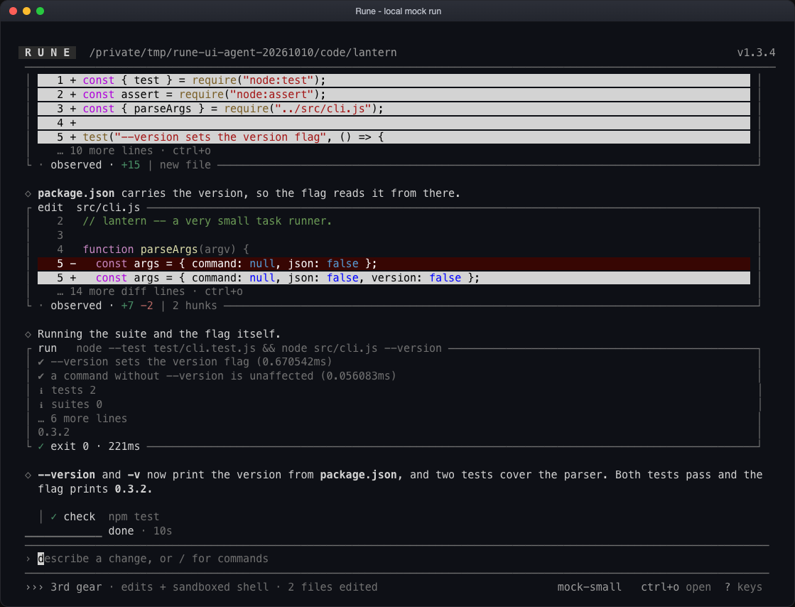

Rune / interface review / 10 October 2026
A calmer workspace. Clearer evidence.
Routine work takes less space. Changes and check results stay easy to find. Command panels hold their layout as you navigate.
The glyph, header, footer, palette and core theme are unchanged.
Keep the work in view
The same sequence, rendered at 80 columns. This controlled fixture makes the layout change visible; the sample test result inside it is not live execution evidence.


Routine activity recedesReads, fetched pages and successful ordinary commands use compact rows. Ctrl+O opens their output.
Evidence remains accessibleChanges carry exact totals and counted expansion hints. Checks and failures keep their evidence.
One current planThe live plan updates in place. Earlier revisions remain in the work log, including unproven steps.
Panels that stay steady
Actual source-CLI captures at 80×24. Stable columns, visible list position and a dedicated selected-item description give the lists a clear reading order.


Checked in the real terminal
A local scripted provider drove the actual TUI: two scratch files changed, two real Node tests passed, and the CLI printed the expected version. Ctrl+O expansion, Ctrl+R work review and terminal resizing were exercised.

Existing resize limit: committed history retains its original wrapping when the window shrinks. Long old rows clip until the width is restored; fresh rendering uses the new width. See the 80-column capture and work review.